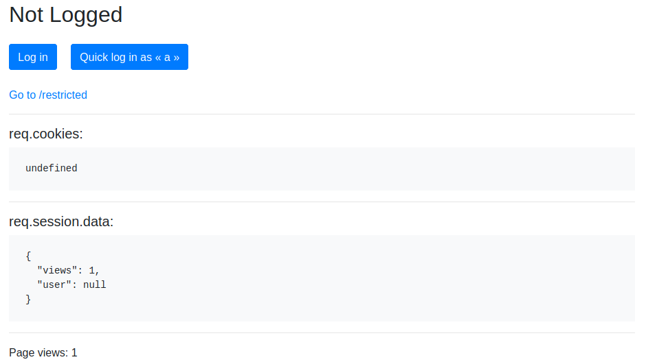
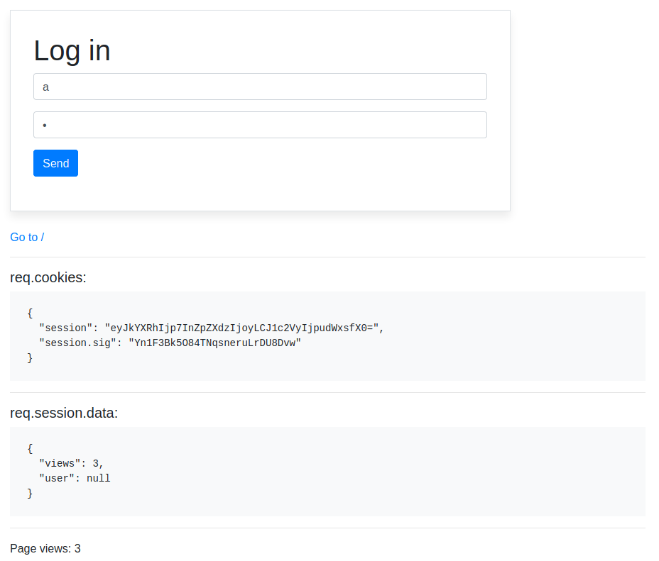

Node + Express + session
Install and start the application
Get the code from this github repository :
# download the project
$ git clone \
--depth 1 \
https://github.com/jeromedecoster/note-express-session.git \
/tmp/note
# cd + install
$ cd /tmp/note && npm install
Test cookie-session
cookie-session is simple cookie-based session implementation. All the session info is stored on the client, in a simple base64 string, in a cookie.
If you look at with-cookie-session.js, the code is really simple :
const cookiesession = require('cookie-session')
// ...
// we setup the cookie-session middleware
app.use(cookiesession({
name: 'session',
// cookie is signed with `keys[0]`, we use a random name
keys: [`key-${Math.random().toString().substr(7)}`],
// `req.cookies` will become `undefined` 8 seconds after the last page shown
maxAge: 8000 // 8 seconds
}))
// we define a middleware function to manage `req.session.data`
app.use((req, res, next) => {
console.log('middleware call at:', (new Date().toISOString()).substr(11, 12), 'for url:', req.url)
// default values for `req.session.data`
var data = { views: 1, user: null }
// update values if `req.session.data` has already been defined
if (req.session.data != undefined) {
data = {
views: req.session.data.views + 1,
user: req.session.data.user
}
}
req.session.data = data
console.log('middleware set req.session.data:', req.session.data)
next()
})
// render the index page, sending `data` to the ejs template
app.get('/', (req, res) => {
console.log('GET / req.session.data:', req.session.data)
res.render('index', { data: req.session.data, /* ... */ })
})
Let’s start the server :
# start the server
$ node with-cookie-session
If you open localhost:3000 you should see this homepage :
- The
req.cookiesvalue is currentlyundefined - The
req.session.datahas the default values

If you reload your browser you should see :
- The
req.cookiesvalue is now defined with oursessioncookie name - In
req.session.data,viewsis incremented
Important : the session value is a simple base64 string. There is no security :
$ echo eyJkYXRhIjp7InZpZXdzIjoxLCJ1c2VyIjpudWxsfX0= | base64 --decode
{"data":{"views":1,"user":null}}
If you click the Log in button, you should see this /login page :
Two users are availables :
- With username
aand passworda - With username
band passwordb

If you click the Send button, you should see this logged homepage :
If you click the Go to /rectricted link, you should see this logged /restricted page :
If you click the Log out button, you should go back to the Not logged homepage :
- The
req.cookiesvalue is nowundefined - The
req.session.datahas the default values
If you click the Go to /rectricted link, you should see this Not logged /restricted page :
Important : you can play with this demo site in different browsers (regular and incognito mode) and see the different sessions.
Test express-session
express-session is more advanced. By default, all the session info are stored in the MemoryStore.
But if you follow the stateless architecture principle or if you have a cluster of servers you know that storing session data in a database is essential.
This middleware allows the use of numerous externalized stores.
For this demo we will stay with the default MemoryStore.
If you look at with-express-session.js, the code is really simple :
const expresssession = require('express-session')
// ...
app.use(expresssession({
name: 'session',
/*
* This is the secret used to sign the session ID cookie.
* We use a random name.
*/
secret: `secret-${Math.random().toString().substr(7)}`,
/*
* Forces a session that is "uninitialized" to be saved to the store.
* A session is uninitialized when it is new but not modified.
* Choosing false is useful for implementing login sessions, reducing server storage
* usage, or complying with laws that require permission before setting a cookie.
* The default value is true.
*/
saveUninitialized: false,
/*
* Forces the session to be saved back to the session store, even if
* the session was never modified during the request.
* The default value is true, but using the default has been deprecated,
* as the default will change in the future.
* Typically, you'll want false.
*/
resave: false,
cookie: {
// `req.cookies.session` will be deleted 8 seconds after the last page shown
maxAge: 8000 // 8 seconds
}
}))
Let’s start the server :
# start the server
$ node with-express-session
If you open localhost:3000 you should see this homepage :
- The
req.cookiesvalue is currentlyundefined - The
req.session.datahas the default values
If you reload your browser you should see :
- The
req.cookiesvalue is now defined with oursessioncookie name - The
sessionvalue is different than with cookie-session : the value is longer. The value starts with the prefixs: - In
req.session.data,viewsis incremented
Important : now the session value is like a hash identifier. There is no data stored in the cookie. It’s safe.
You can play with this demo site in different browsers (regular and incognito mode) and see the different sessions.
The experience remains the same as before.
In another article we will see how to use external storage. This is where this middleware will start to shine.